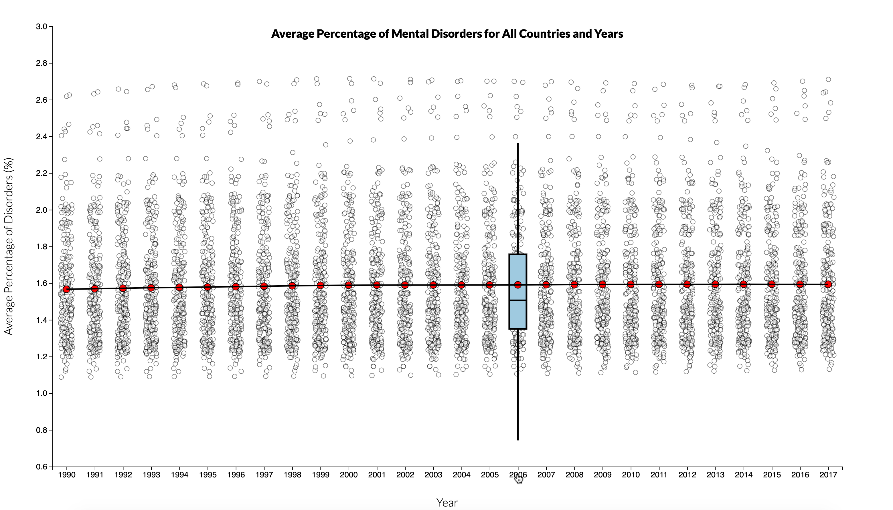
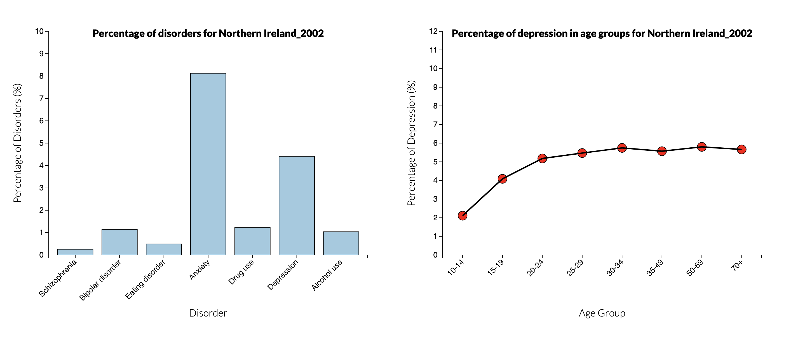

-
At first the following visualization is presented where each dot
represents the average of all mental health disorders percentages
for a specific year and country. Also the red dots show the average
of all datapoints for that year and the solid line connects all
these average points.

-
By clicking on a specific year, the box plot for the corresponding
year will appear. By clicking on the year again, the box plot
disappears.
 -
By hovering over a specific datapoint, the information about that
datapoint shows up.

-
Clicking on a datapoint highlights that datapoint plus all other
points corresponding to that country over the years, and clicking on
the same point again undoes the highlight.

-
Clicking on a datapoint from the first visualization updates the
second and the third visualization to show the data for the chosen
year and country.
 -
Hovering over a specific tile, you can see the correlation between 2
disorders. Also the highest correlation is annotated with a red
circle.